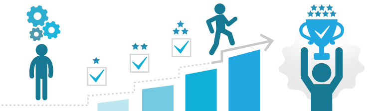

En este proyecto se realizará el tema del proyecto de vida en el que se dirán nuestros proyectos en los que están nuestros sueños, metas, logros, retos y muchas cosas más a corto, mediano y largo plazo en los que abarcaremos también que es un proyecto de vida y que necesita contener ciertos pasos para lograr la meta, para que este bien estructurado y así se puedan cumplir según el tiempo estimado que nosotros le demos, en él se abarcan ámbitos como sociales, escolares, de salud emocional y psicológica para poder cumplirlas. Y así decir que cumplimos con la meta u objetivo planeado siguiendo los pasos dichos en el proyecto de vida así la satisfacción será doble ya que será por haber cumplido la meta y también por que se cumplió conforme lo planeado. En nuestras vidas será un aspecto crucial de nuestras vidas escolares, también pondremos en práctica el desarrollo de habilidades socioemocionales.
Es un plan a corto, mediano y largo plazo sobre cómo te visualizas en el futuro, es poner en papel los pasos a seguir para alcanzar el logro, se diseña para cumplir determinados objetivos o metas concretas y se basa en gustos personales, valores o habilidades, es plan personal que incluye metas, aspiraciones y acciones a largo plazo. Se centra en áreas como carreras, educación, relaciones y desarrollo personal, ayudándote a definir tus objetivos y trabajar así ellos para lograr una vida satisfactoria y significativa. Aumentar u fomentar nuestra autonomía y ser inserticos a buscar los conocimientos.
Un proyecto de vida es el plan que una persona se traza para conseguir objetivos, un camino para alcanzar metas, que da coherencia a la existencia y marca un estilo en el actuar, en relacionarse y en el modo de ver los acontecimientos. Los proyectos de vida están ligados a la vocación, modelos, actitudes, sentido de la vida, objetivos (a cortos, mediano y largo plazo), una lúcida planificación, una buena dosis de motivación y otros aspectos sociales. Con el cual se hace una idea o panorama de lo que deseas hacer en el futuro y cuales son algunas de las metas que quieres cumplir y también las que salgan de imprevisto y lograrlas.

· Tu objetivo principal.
· Acciones para lograr el objetivo
· Plazo de consecución
· Desafíos que encontrarás por el camino.
· Focaliza la energía la que quiere alcanzar.
· Alinea las decisiones.
· Pasar a la acción